11 Communication
11.1 Introduction
Dans la Chapitre 10, vous avez appris à utiliser les graphiques comme outils d’exploration. Quand vous créez des graphiques exploratoires, vous savez—même avant de les regarder—quelles variables le graphique affichera. Vous avez créé chaque graphique pour un objectif, pouviez le regarder rapidement, puis passer au graphique suivant. Au cours de la plupart des analyses, vous produirez des dizaines ou des centaines de graphiques, dont la plupart seront immédiatement jetés.
Maintenant que vous comprenez vos données, vous devez communiquer votre compréhension à d’autres. Votre public ne partagera probablement pas vos connaissances de base et ne sera pas profondément investi dans les données. Pour aider les autres à construire rapidement un bon modèle mental des données, vous devrez investir un effort considérable pour rendre vos graphiques aussi autoexplicatifs que possible. Dans ce chapitre, vous apprendrez certains des outils que ggplot2 fournit pour ce faire.
Ce chapitre se concentre sur les outils dont vous avez besoin pour créer de bons graphiques. Nous supposons que vous savez ce que vous voulez, et vous avez juste besoin de savoir comment le faire. Pour cette raison, nous vous recommandons fortement de coupler ce chapitre avec un bon livre général sur la visualisation. Nous aimons particulièrement The Truthful Art, par Albert Cairo. Il n’enseigne pas la mécanique de création de visualisations, mais se concentre plutôt sur ce que vous devez penser pour créer des graphiques efficaces.
11.1.1 Prérequis
Dans ce chapitre, nous nous concentrerons à nouveau sur ggplot2. Nous utiliserons aussi un peu dplyr pour la manipulation des données, scales pour remplacer les divisions, étiquettes, transformations et palettes par défaut, et quelques packages d’extension ggplot2, incluant ggrepel (https://ggrepel.slowkow.com) par Kamil Slowikowski et patchwork (https://patchwork.data-imaginist.com) par Thomas Lin Pedersen. N’oubliez pas que vous devez installer ces packages avec install.packages() si vous ne les avez pas déjà.
11.2 Étiquettes
L’endroit le plus facile pour commencer quand vous transformez un graphique exploratoire en graphique d’exposition est avec de bonnes étiquettes. Vous ajoutez des étiquettes avec la fonction labs().
ggplot(mpg, aes(x = displ, y = hwy)) +
geom_point(aes(color = class)) +
geom_smooth(se = FALSE) +
labs(
x = "Cylindrée du moteur (L)",
y = "Efficacité énergétique sur autoroute (mpg)",
color = "Type de voiture",
title = "L'efficacité énergétique diminue généralement avec la cylindrée du moteur",
subtitle = "Les deux places (voitures de sport) sont une exception en raison de leur légèreté",
caption = "Données de fueleconomy.gov"
)![Nuage de points de l'efficacité énergétique sur autoroute par rapport à la cylindrée du moteur, où les points sont colorés selon la classe de voiture. Une courbe lisse suivant la trajectoire de la relation entre l'efficacité énergétique sur autoroute et la cylindrée du moteur est superposée. L'axe x est étiqueté « Cylindrée du moteur (L) » et l'axe y « Efficacité énergétique sur autoroute (mpg) ». La légende est étiquetée « Type de voiture ». Le graphique est intitulé « L'efficacité énergétique diminue généralement avec la cylindrée du moteur ». Le sous-titre est « Les deux places (voitures de sport) sont une exception en raison de leur légèreté » et la note est « Données de fueleconomy.gov ».](communication_files/figure-html/unnamed-chunk-2-1.png)
Le but d’un titre de graphique est de résumer la découverte principale. Évitez les titres qui décrivent simplement ce qu’est le graphique, par ex., « Un nuage de points de la cylindrée du moteur par rapport à l’efficacité énergétique ».
Si vous devez ajouter plus de texte, il y a deux autres étiquettes utiles : subtitle ajoute des détails supplémentaires dans une police plus petite sous le titre et caption ajoute du texte en bas à droite du graphique, souvent utilisé pour décrire la source des données. Vous pouvez aussi utiliser labs() pour remplacer les titres des axes et des légendes. C’est généralement une bonne idée de remplacer les noms de variables courts par des descriptions plus détaillées, et d’inclure les unités.
Il est possible d’utiliser des équations mathématiques à la place de chaînes de texte. Remplacez simplement "" par quote() et lisez les options disponibles dans ?plotmath :
df <- tibble(
x = 1:10,
y = cumsum(x^2)
)
ggplot(df, aes(x, y)) +
geom_point() +
labs(
x = quote(x[i]),
y = quote(sum(x[i] ^ 2, i == 1, n))
)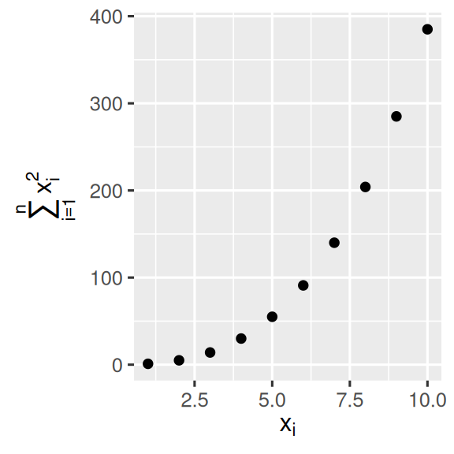
11.2.1 Exercices
Créez un graphique sur les données d’efficacité énergétique avec des étiquettes
title,subtitle,caption,x,yetcolorpersonnalisées.-
Recréez le graphique suivant en utilisant les données d’efficacité énergétique. Notez que les couleurs et les formes des points varient selon le type de chaîne de transmission.
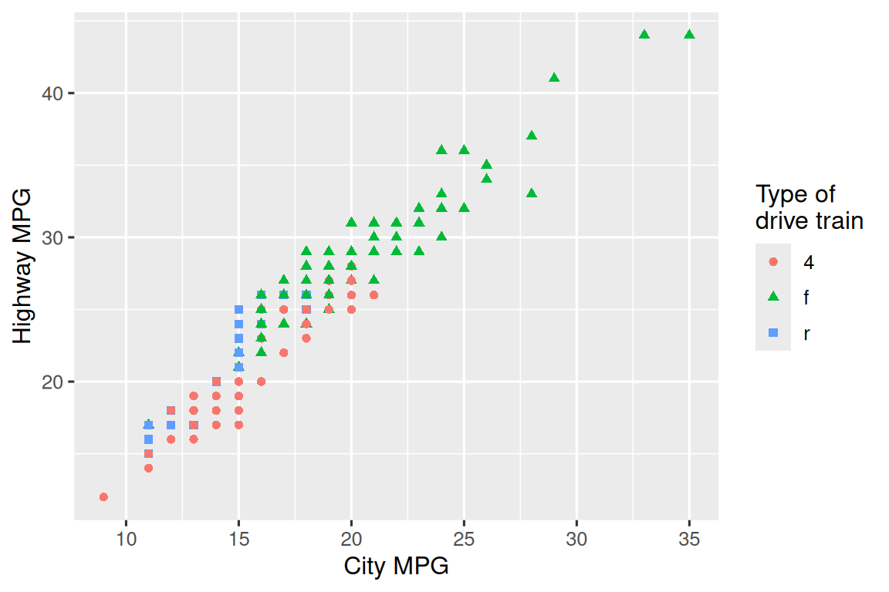
Prenez un graphique exploratoire que vous avez créé au cours du dernier mois, et ajoutez des titres informatifs pour faciliter la compréhension des autres.
11.3 Annotations
En plus d’étiqueter les composants majeurs de votre graphique, il est souvent utile d’étiqueter les observations individuelles ou les groupes d’observations. Le premier outil à votre disposition est geom_text(). geom_text() est similaire à geom_point(), mais il a une esthétique supplémentaire : label. Cela rend possible l’ajout d’étiquettes textuelles à vos graphiques.
Il existe deux sources possibles d’étiquettes. D’abord, vous pourriez avoir un tibble qui fournit des étiquettes. Dans le graphique suivant, nous extrayons les voitures avec la plus grande cylindrée du moteur dans chaque type de chaîne de transmission et enregistrons leurs informations dans un nouveau data frame appelé label_info.
label_info <- mpg |>
group_by(drv) |>
arrange(desc(displ)) |>
slice_head(n = 1) |>
mutate(
drive_type = case_when(
drv == "f" ~ "traction avant",
drv == "r" ~ "traction arrière",
drv == "4" ~ "traction intégrale"
)
) |>
select(displ, hwy, drv, drive_type)
label_info
#> # A tibble: 3 × 4
#> # Groups: drv [3]
#> displ hwy drv drive_type
#> <dbl> <int> <chr> <chr>
#> 1 6.5 17 4 traction intégrale
#> 2 5.3 25 f traction avant
#> 3 7 24 r traction arrièreEnsuite, nous utilisons ce nouveau data frame pour étiqueter directement les trois groupes afin de remplacer la légende par des étiquettes placées directement sur le graphique. En utilisant les arguments fontface et size, nous pouvons personnaliser l’apparence des étiquettes textuelles. Elles sont plus grandes que le reste du texte sur le graphique et en gras. (theme(legend.position = "none") désactive toutes les légendes — nous en parlerons plus en détail bientôt.)
ggplot(mpg, aes(x = displ, y = hwy, color = drv)) +
geom_point(alpha = 0.3) +
geom_smooth(se = FALSE) +
geom_text(
data = label_info,
aes(x = displ, y = hwy, label = drive_type),
fontface = "bold", size = 5, hjust = "right", vjust = "bottom"
) +
theme(legend.position = "none")
#> `geom_smooth()` using method = 'loess' and formula = 'y ~ x'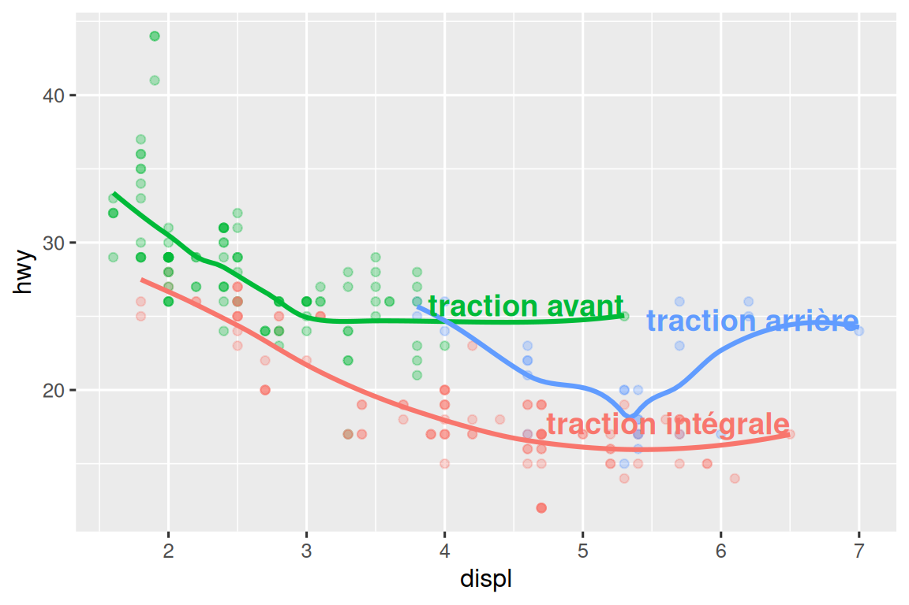
Notez l’utilisation de hjust (justification horizontale) et vjust (justification verticale) pour contrôler l’alignement de l’étiquette.
Cependant, le graphique annoté que nous avons créé ci-dessus est difficile à lire car les étiquettes se chevauchent les unes les autres et avec les points. Nous pouvons utiliser la fonction geom_label_repel() du package ggrepel pour résoudre ces deux problèmes. Ce package utile ajustera automatiquement les étiquettes pour qu’elles ne se chevauchent pas :
ggplot(mpg, aes(x = displ, y = hwy, color = drv)) +
geom_point(alpha = 0.3) +
geom_smooth(se = FALSE) +
geom_label_repel(
data = label_info,
aes(x = displ, y = hwy, label = drive_type),
fontface = "bold", size = 5, nudge_y = 2
) +
theme(legend.position = "none")
#> `geom_smooth()` using method = 'loess' and formula = 'y ~ x'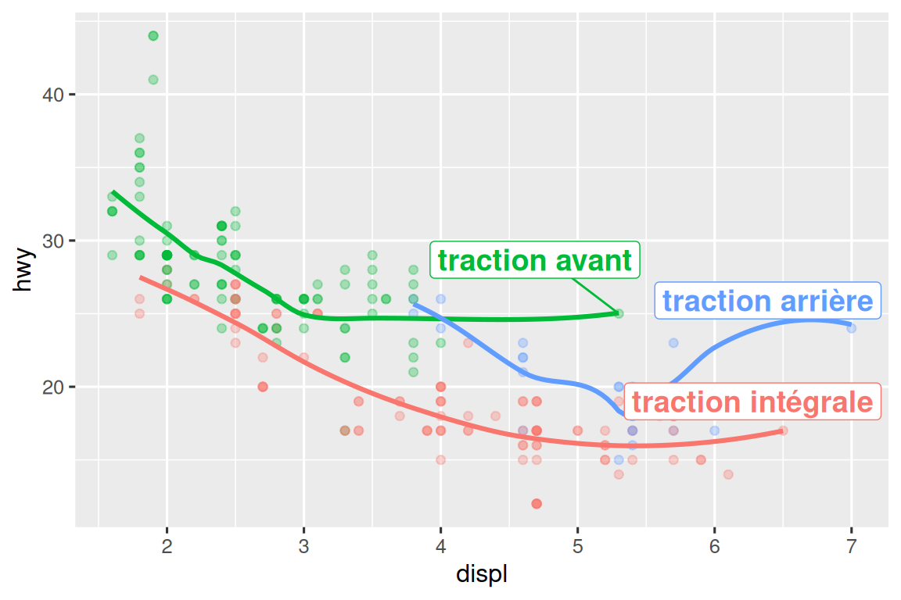
Vous pouvez aussi utiliser la même idée pour mettre en évidence certains points sur un graphique avec geom_text_repel() du package ggrepel. Notez une autre technique utile utilisée ici : nous avons ajouté une deuxième couche de grands points creux pour mettre davantage en évidence les points étiquetés.
potential_outliers <- mpg |>
filter(hwy > 40 | (hwy > 20 & displ > 5))
ggplot(mpg, aes(x = displ, y = hwy)) +
geom_point() +
geom_text_repel(data = potential_outliers, aes(label = model)) +
geom_point(data = potential_outliers, color = "red") +
geom_point(
data = potential_outliers,
color = "red", size = 3, shape = "circle open"
)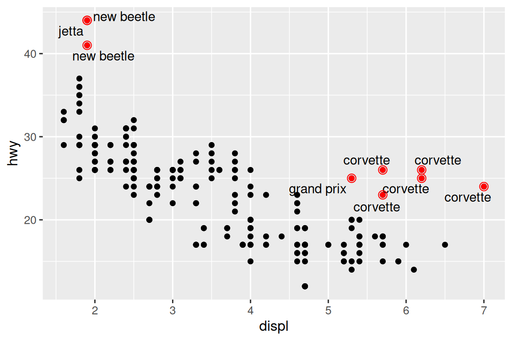
Souvenez-vous, en plus de geom_text() et geom_label(), vous avez de nombreuses autres geoms dans ggplot2 disponibles pour vous aider à annoter votre graphique. Quelques idées :
Utilisez
geom_hline()etgeom_vline()pour ajouter des lignes de référence. Nous les rendons souvent épaisses (linewidth = 2) et blanches (color = white), et les dessinez sous la couche de données primaire. Cela les rend faciles à voir, sans détourner l’attention des données.Utilisez
geom_rect()pour dessiner un rectangle autour des points d’intérêt. Les limites du rectangle sont définies par les esthétiquesxmin,xmax,ymin,ymax. Alternativement, consultez le package ggforce, spécifiquementgeom_mark_hull(), qui vous permet d’annoter des sous-ensembles de points avec des enveloppes.Utilisez
geom_segment()avec l’argumentarrowpour attirer l’attention sur un point avec une flèche. Utilisez les esthétiquesxetypour définir l’emplacement de départ, etxendetyendpour définir l’emplacement de fin.
Une autre fonction pratique pour ajouter des annotations aux graphiques est annotate(). En règle générale, les geoms sont utiles pour mettre en évidence un sous-ensemble des données tandis que annotate() est utile pour ajouter un ou quelques éléments d’annotation à un graphique.
Pour démontrer l’utilisation de annotate(), créons du texte à ajouter à notre graphique. Le texte est un peu long, donc nous utiliserons stringr::str_wrap() pour ajouter automatiquement des sauts de ligne en fonction du nombre de caractères que vous voulez par ligne :
trend_text <- "Les plus grandes cylindrées tendent à avoir une plus faible efficacité énergétique." |>
str_wrap(width = 30)
trend_text
#> [1] "Les plus grandes cylindrées\ntendent à avoir une plus\nfaible efficacité énergétique."Ensuite, nous ajoutons deux couches d’annotation : une avec une geom label et l’autre avec une geom segment. Les esthétiques x et y dans les deux définissent où l’annotation doit commencer, et les esthétiques xend et yend dans l’annotation segment définissent l’emplacement de fin du segment. Notez aussi que le segment est stylisé comme une flèche.
ggplot(mpg, aes(x = displ, y = hwy)) +
geom_point() +
annotate(
geom = "label", x = 3.5, y = 38,
label = trend_text,
hjust = "left", color = "red"
) +
annotate(
geom = "segment",
x = 3, y = 35, xend = 5, yend = 25, color = "red",
arrow = arrow(type = "closed")
)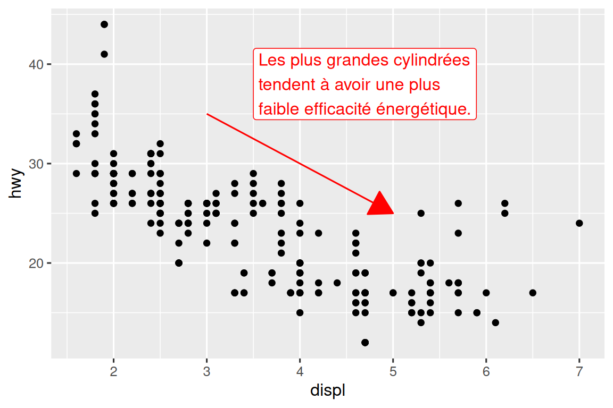
L’annotation est un outil puissant pour communiquer les conclusions principales et les caractéristiques intéressantes de vos visualisations. La seule limite est votre imagination (et votre patience pour positionner les annotations de manière esthétique) !
11.3.1 Exercices
Utilisez
geom_text()avec des positions infinies pour placer le texte dans les quatre coins du graphique.Utilisez
annotate()pour ajouter une geom point au milieu de votre dernier graphique sans avoir à créer un tibble. Personnalisez la forme, la taille ou la couleur du point.Comment les étiquettes avec
geom_text()interagissent-elles avec le facettage ? Comment pouvez-vous ajouter une étiquette à une seule facette ? Comment pouvez-vous mettre une étiquette différente dans chaque facette ? (Indice : Pensez au jeu de données qui est transmis àgeom_text().)Quels arguments de
geom_label()contrôlent l’apparence de la boîte de fond ?Quels sont les quatre arguments de
arrow()? Comment fonctionnent-ils ? Créez une série de graphiques qui démontrent les options les plus importantes.
11.4 Échelles
La troisième façon de rendre votre graphique meilleur pour la communication est d’ajuster les échelles. Les échelles contrôlent la façon dont les mappages esthétiques se manifestent visuellement.
11.4.1 Échelles par défaut
Normalement, ggplot2 ajoute automatiquement les échelles pour vous. Par exemple, quand vous tapez :
ggplot(mpg, aes(x = displ, y = hwy)) +
geom_point(aes(color = class))ggplot2 ajoute automatiquement les échelles par défaut en coulisse :
ggplot(mpg, aes(x = displ, y = hwy)) +
geom_point(aes(color = class)) +
scale_x_continuous() +
scale_y_continuous() +
scale_color_discrete()Notez le schéma de nommage pour les échelles : scale_ suivi du nom de l’esthétique, puis _, puis le nom de l’échelle. Les échelles par défaut sont nommées selon le type de variable auquel elles s’alignent : continu, discret, datetime ou date. scale_x_continuous() place les valeurs numériques de displ sur une ligne de nombre continu sur l’axe x, scale_color_discrete() choisit les couleurs pour chaque class de voiture, etc. Il y a beaucoup d’échelles non-défaut que vous apprendrez ci-dessous.
Les échelles par défaut ont été soigneusement choisies pour bien fonctionner sur une large gamme d’entrées. Néanmoins, vous pourriez vouloir remplacer les défauts pour deux raisons :
Vous pourriez vouloir ajuster certains des paramètres de l’échelle par défaut. Cela vous permet de faire des choses comme changer les divisions sur les axes, ou les étiquettes clés sur la légende.
Vous pourriez vouloir remplacer complètement l’échelle, et utiliser un algorithme complètement différent. Souvent, vous pouvez faire mieux que le défaut parce que vous savez plus sur les données.
11.4.2 Graduations d’axes et clés de légende
Collectivement, les axes et les légendes s’appellent des guides. Les axes sont utilisés pour les esthétiques x et y ; les légendes sont utilisées pour tout le reste.
Il y a deux arguments principaux qui affectent l’apparence des graduations sur les axes et les clés sur la légende : breaks et labels. Breaks contrôle la position des graduations, ou les valeurs associées aux clés. Labels contrôle l’étiquette texte associée à chaque graduation/clé. L’utilisation la plus courante de breaks est de remplacer le choix par défaut :
ggplot(mpg, aes(x = displ, y = hwy, color = drv)) +
geom_point() +
scale_y_continuous(breaks = seq(15, 40, by = 5)) 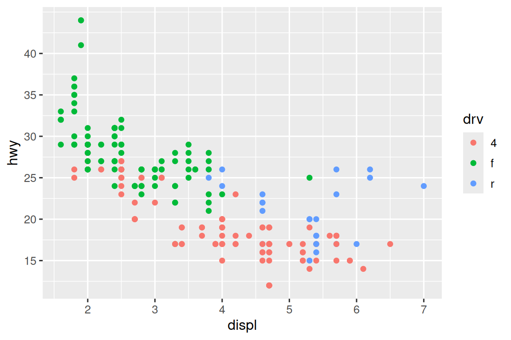
Vous pouvez utiliser labels de la même manière (un vecteur de caractères de la même longueur que breaks), mais vous pouvez aussi le définir à NULL pour supprimer complètement les étiquettes. Cela peut être utile pour les cartes, ou pour publier des graphiques où vous ne pouvez pas partager les nombres absolus. Vous pouvez aussi utiliser breaks et labels pour contrôler l’apparence des légendes. Pour les échelles discrètes pour les variables catégoques, labels peut être une liste nommée des noms de niveaux existants et des étiquettes souhaitées pour eux.
ggplot(mpg, aes(x = displ, y = hwy, color = drv)) +
geom_point() +
scale_x_continuous(labels = NULL) +
scale_y_continuous(labels = NULL) +
scale_color_discrete(labels = c("4" = "traction intégrale", "f" = "traction avant", "r" = "traction arrière"))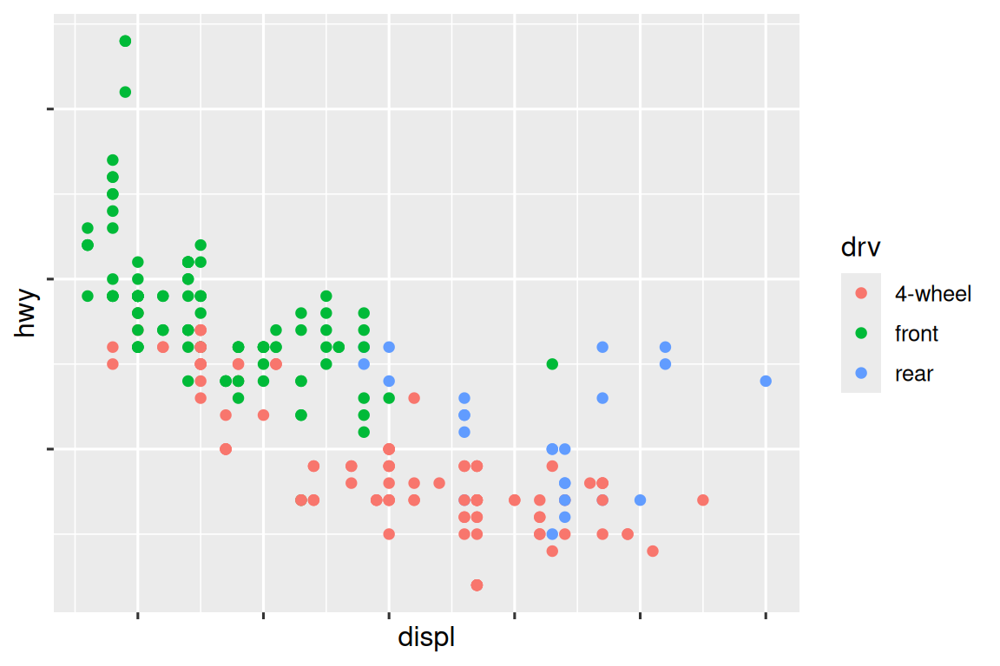
L’argument labels couplé aux fonctions d’étiquetage du package scales est aussi utile pour formater les nombres en tant que devise, pourcentage, etc. Le graphique de gauche montre l’étiquetage par défaut avec label_dollar(), qui ajoute un signe dollar ainsi qu’une virgule séparatrice des milliers. Le graphique de droite ajoute une personnalisation supplémentaire en divisant les valeurs en dollars par 1 000 et en ajoutant un suffixe « K » (pour « milliers ») ainsi qu’en ajoutant des divisions personnalisées. Notez que breaks est à l’échelle originale des données.
# Left
ggplot(diamonds, aes(x = price, y = cut)) +
geom_boxplot(alpha = 0.05) +
scale_x_continuous(labels = label_dollar())
# Right
ggplot(diamonds, aes(x = price, y = cut)) +
geom_boxplot(alpha = 0.05) +
scale_x_continuous(
labels = label_dollar(scale = 1/1000, suffix = "K"),
breaks = seq(1000, 19000, by = 6000)
)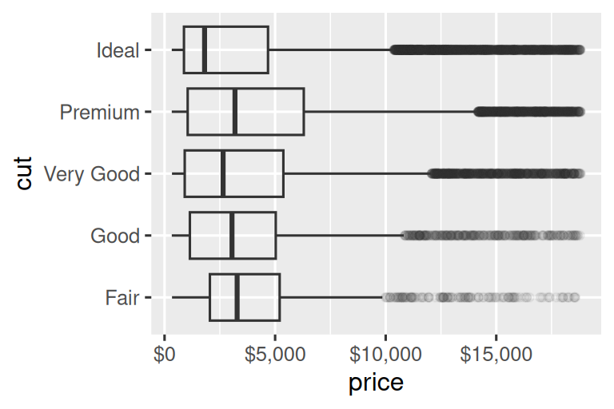
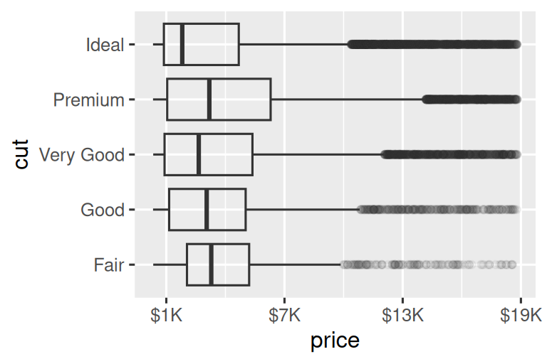
Another handy label function is label_percent():
ggplot(diamonds, aes(x = cut, fill = clarity)) +
geom_bar(position = "fill") +
scale_y_continuous(name = "Percentage", labels = label_percent())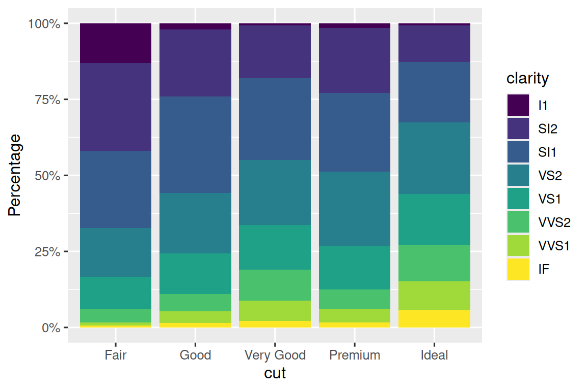
Another use of breaks is when you have relatively few data points and want to highlight exactly where the observations occur. For example, take this plot that shows when each US president started and ended their term.
presidential |>
mutate(id = 33 + row_number()) |>
ggplot(aes(x = start, y = id)) +
geom_point() +
geom_segment(aes(xend = end, yend = id)) +
scale_x_date(name = NULL, breaks = presidential$start, date_labels = "'%y")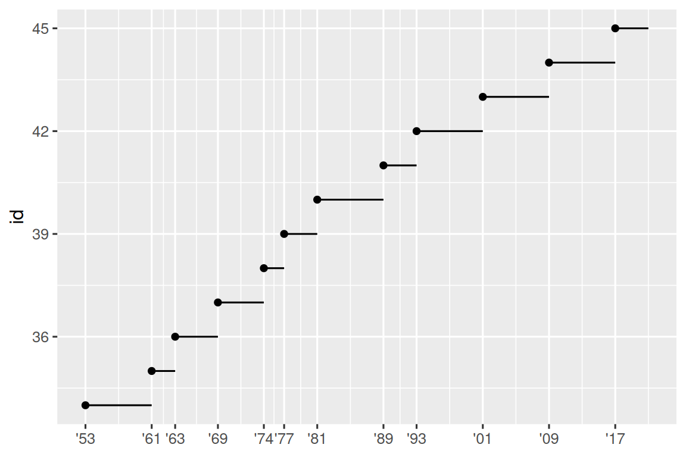
Note that for the breaks argument we pulled out the start variable as a vector with presidential$start because we can’t do an aesthetic mapping for this argument. Also note that the specification of breaks and labels for date and datetime scales is a little different:
date_labelstakes a format specification, in the same form asparse_datetime().date_breaks(not shown here), takes a string like “2 days” or “1 month”.
11.4.3 Disposition de la légende
Vous utiliserez le plus souvent breaks et labels pour ajuster les axes. Bien qu’ils fonctionnent aussi pour les légendes, il y a quelques autres techniques que vous êtes plus susceptible d’utiliser.
Pour contrôler la position générale de la légende, vous devez utiliser un paramètre theme(). Nous reviendrons aux thèmes à la fin du chapitre, mais en bref, ils contrôlent les parties non-données du graphique. Le paramètre de thème legend.position contrôle où la légende est dessinée :
base <- ggplot(mpg, aes(x = displ, y = hwy)) +
geom_point(aes(color = class))
base + theme(legend.position = "right") # le défaut
base + theme(legend.position = "left")
base +
theme(legend.position = "top") +
guides(color = guide_legend(nrow = 3))
base +
theme(legend.position = "bottom") +
guides(color = guide_legend(nrow = 3))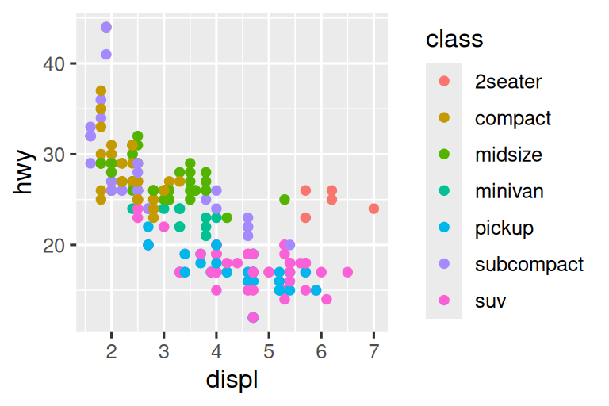
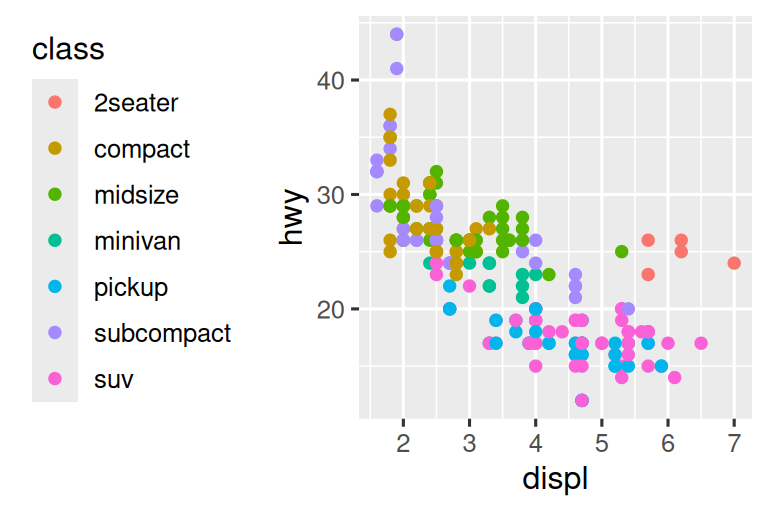
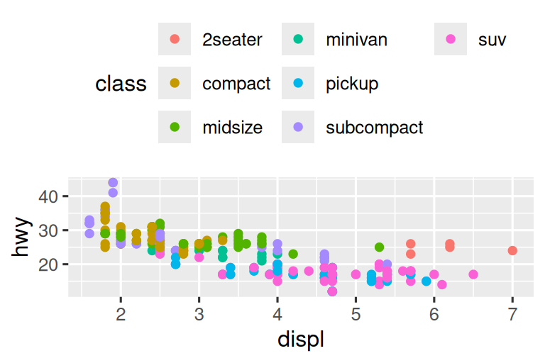
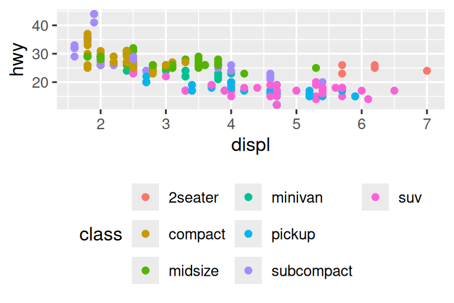
Si votre graphique est court et large, placez la légende en haut ou en bas, et s’il est haut et étroit, placez la légende à gauche ou à droite. Vous pouvez aussi utiliser legend.position = "none" pour supprimer l’affichage de la légende complètement.
Pour contrôler l’affichage des légendes individuelles, utilisez guides() avec guide_legend() ou guide_colorbar(). L’exemple suivant montre deux paramètres importants : contrôler le nombre de lignes que la légende utilise avec nrow, et remplacer l’une des esthétiques pour rendre les points plus grands. Cela est particulièrement utile si vous avez utilisé un alpha faible pour afficher de nombreux points sur un graphique.
ggplot(mpg, aes(x = displ, y = hwy)) +
geom_point(aes(color = class)) +
geom_smooth(se = FALSE) +
theme(legend.position = "bottom") +
guides(color = guide_legend(nrow = 2, override.aes = list(size = 4)))
#> `geom_smooth()` using method = 'loess' and formula = 'y ~ x'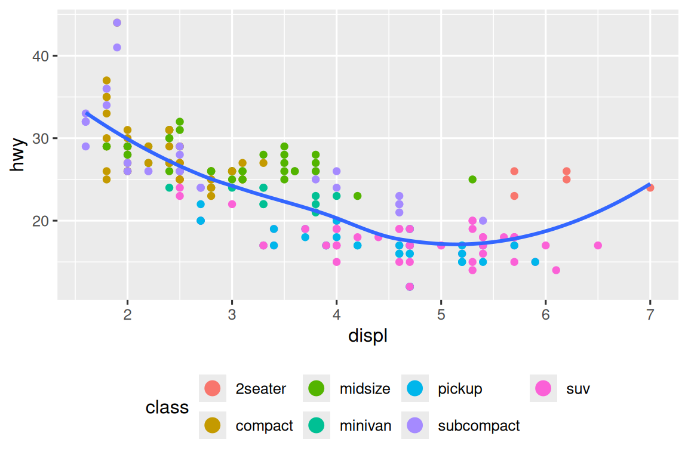
Notez que le nom de l’argument dans guides() correspond au nom de l’esthétique, comme dans labs().
11.4.4 Remplacer une échelle
Au lieu de simplement ajuster les détails un peu, vous pouvez plutôt remplacer complètement l’échelle. Il y a deux types d’échelles que vous êtes probablement plus susceptible de vouloir changer : les échelles de position continues et les échelles de couleur. Heureusement, les mêmes principes s’appliquent à toutes les autres esthétiques, donc une fois que vous maîtrisez la position et la couleur, vous serez en mesure de rapidement maîtriser d’autres remplacements d’échelle.
Il est très utile de tracer les transformations de votre variable. Par exemple, il est plus facile de voir la relation précise entre carat et price si nous les transformons en logarithme :
# Gauche
ggplot(diamonds, aes(x = carat, y = price)) +
geom_bin2d()
#> `stat_bin2d()` using `bins = 30`. Pick better value `binwidth`.
# Droite
ggplot(diamonds, aes(x = log10(carat), y = log10(price))) +
geom_bin2d()
#> `stat_bin2d()` using `bins = 30`. Pick better value `binwidth`.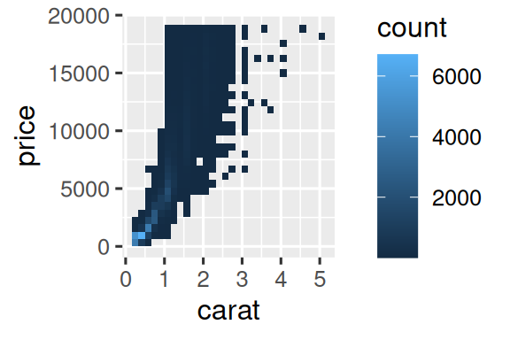
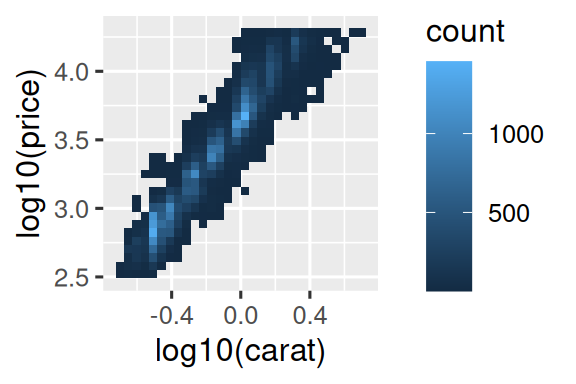
Cependant, l’inconvénient de cette transformation est que les axes sont maintenant étiquetés avec les valeurs transformées, ce qui rend difficile l’interprétation du graphique. Au lieu de faire la transformation dans le mappage esthétique, nous pouvons plutôt le faire avec l’échelle. C’est visuellement identique, sauf que les axes sont étiquetés à l’échelle de données originale.
ggplot(diamonds, aes(x = carat, y = price)) +
geom_bin2d() +
scale_x_log10() +
scale_y_log10()
#> `stat_bin2d()` using `bins = 30`. Pick better value `binwidth`.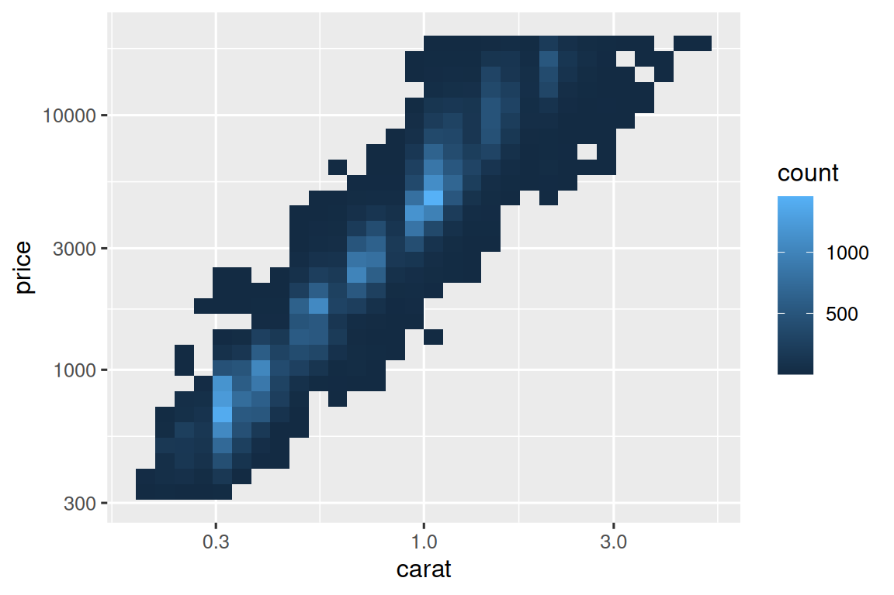
Une autre échelle qui est fréquemment personnalisée est la couleur. L’échelle catégorique par défaut choisit les couleurs qui sont régulièrement espacées autour de la roue chromatique. Les alternatives utiles sont les échelles ColorBrewer qui ont été ajustées à la main pour mieux fonctionner pour les personnes avec des types courants de daltonisme. Les deux graphiques ci-dessous se ressemblent, mais il y a assez de différence dans les teintes de rouge et de vert pour que les points à droite puissent être distingués même par les personnes atteintes de daltonisme rouge-vert.1
ggplot(mpg, aes(x = displ, y = hwy)) +
geom_point(aes(color = drv))
ggplot(mpg, aes(x = displ, y = hwy)) +
geom_point(aes(color = drv)) +
scale_color_brewer(palette = "Set1")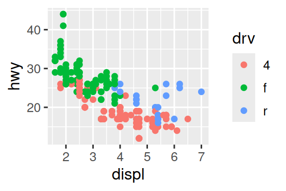
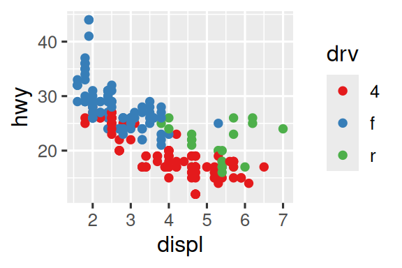
N’oubliez pas les techniques plus simples pour améliorer l’accessibilité. S’il n’y a que quelques couleurs, vous pouvez ajouter un mappage de forme redondant. Cela aidera également à assurer que votre graphique est interprétable en noir et blanc.
ggplot(mpg, aes(x = displ, y = hwy)) +
geom_point(aes(color = drv, shape = drv)) +
scale_color_brewer(palette = "Set1")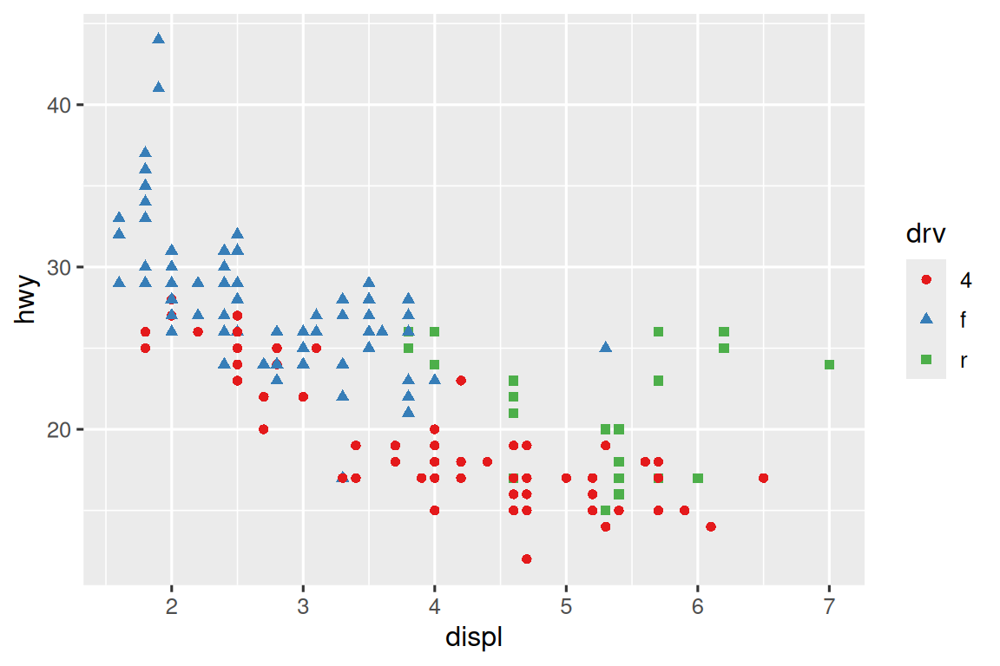
Les échelles ColorBrewer sont documentées en ligne à https://colorbrewer2.org/ et rendues disponibles en R via le package RColorBrewer, par Erich Neuwirth. Figure 11.1 montre la liste complète de toutes les palettes. Les palettes séquentielles (en haut) et divergentes (en bas) sont particulièrement utiles si vos valeurs catégoques sont ordonnées, ou ont un « milieu ». Cela se produit souvent si vous avez utilisé cut() pour transformer une variable continue en variable catégorique.
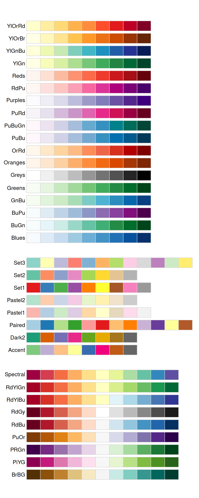
Quand vous avez un mappage prédéfini entre les valeurs et les couleurs, utilisez scale_color_manual(). Par exemple, si nous mappons le parti présidentiel à la couleur, nous voulons utiliser le mappage standard du rouge pour les Républicains et du bleu pour les Démocrates. Une approche pour assigner ces couleurs est l’utilisation de codes de couleur hexadécimaux :
presidential |>
mutate(id = 33 + row_number()) |>
ggplot(aes(x = start, y = id, color = party)) +
geom_point() +
geom_segment(aes(xend = end, yend = id)) +
scale_color_manual(values = c(Republican = "#E81B23", Democratic = "#00AEF3"))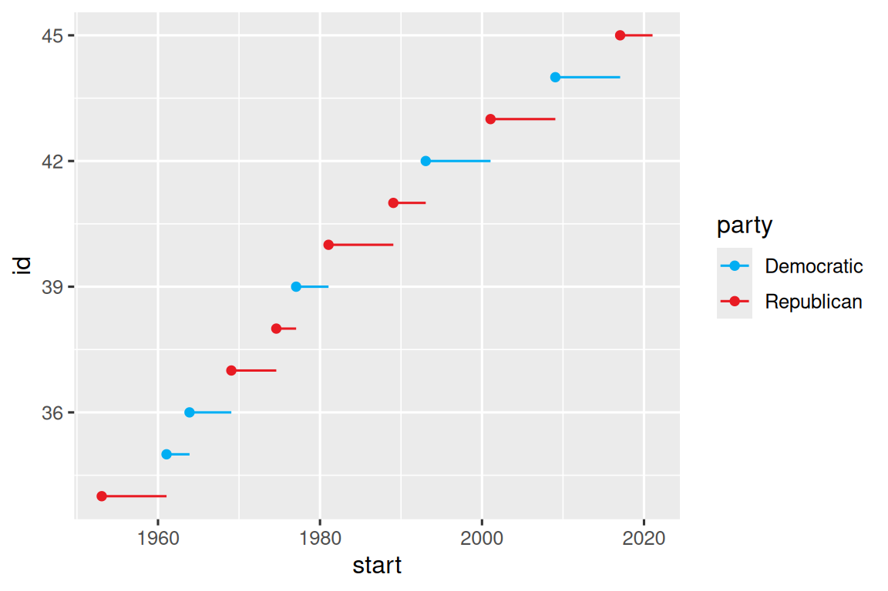
Pour la couleur continue, vous pouvez utiliser le built-in scale_color_gradient() ou scale_fill_gradient(). Si vous avez une échelle divergente, vous pouvez utiliser scale_color_gradient2(). Cela vous permet de donner, par exemple, des couleurs différentes aux valeurs positives et négatives. C’est parfois aussi utile si vous voulez distinguer les points au-dessus ou au-dessous de la moyenne.
Une autre option est d’utiliser les échelles de couleur viridis. Les concepteurs, Nathaniel Smith et Stéfan van der Walt, ont soigneusement élaboré des schémas de couleur continues qui sont perceptibles aux personnes avec diverses formes de daltonisme ainsi que perceptuellement uniformes à la fois en couleur et en noir et blanc. Ces échelles sont disponibles sous forme de palettes continues (c), discrètes (d) et groupées (b) dans ggplot2.
df <- tibble(
x = rnorm(10000),
y = rnorm(10000)
)
ggplot(df, aes(x, y)) +
geom_hex() +
coord_fixed() +
labs(title = "Default, continuous", x = NULL, y = NULL)
ggplot(df, aes(x, y)) +
geom_hex() +
coord_fixed() +
scale_fill_viridis_c() +
labs(title = "Viridis, continuous", x = NULL, y = NULL)
ggplot(df, aes(x, y)) +
geom_hex() +
coord_fixed() +
scale_fill_viridis_b() +
labs(title = "Viridis, binned", x = NULL, y = NULL)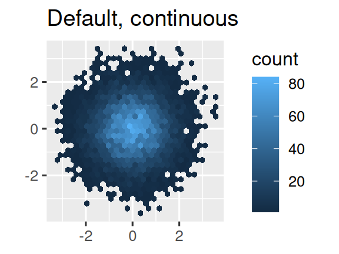
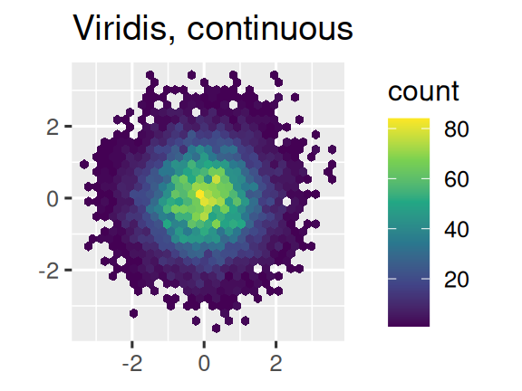
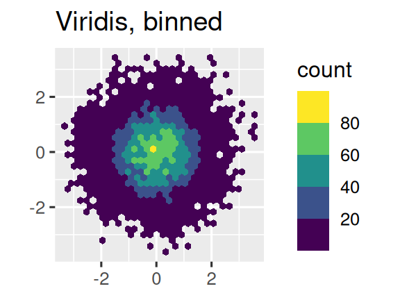
Note that all color scales come in two varieties: scale_color_*() and scale_fill_*() for the color and fill aesthetics respectively (the color scales are available in both UK and US spellings).
11.4.5 Zoom
Il y a trois façons de contrôler les limites du graphique :
- Ajuster les données qui sont tracées.
- Définir les limites dans chaque échelle.
- Définir
xlimetylimdanscoord_cartesian().
Nous démontrerons ces options dans une série de graphiques. Le graphique de gauche montre la relation entre la cylindrée du moteur et l’efficacité énergétique, colorée par type de chaîne de transmission. Le graphique de droite montre les mêmes variables, mais en sous-ensemblant les données qui sont tracées. Le sous-ensemblage des données a affecté les échelles x et y ainsi que la courbe lisse.
# Left
ggplot(mpg, aes(x = displ, y = hwy)) +
geom_point(aes(color = drv)) +
geom_smooth()
# Right
mpg |>
filter(displ >= 5 & displ <= 6 & hwy >= 10 & hwy <= 25) |>
ggplot(aes(x = displ, y = hwy)) +
geom_point(aes(color = drv)) +
geom_smooth()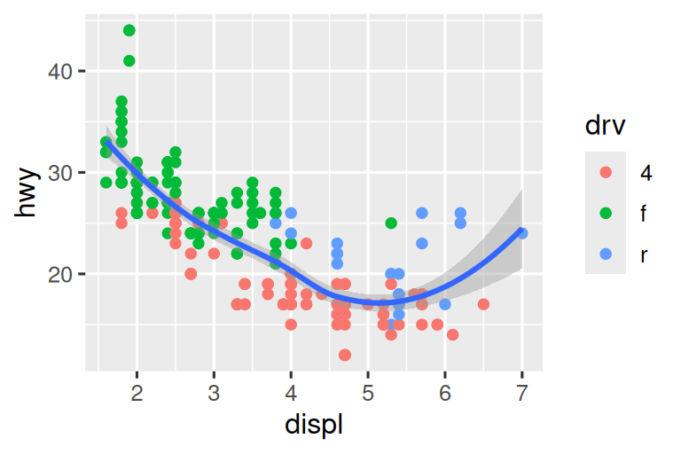
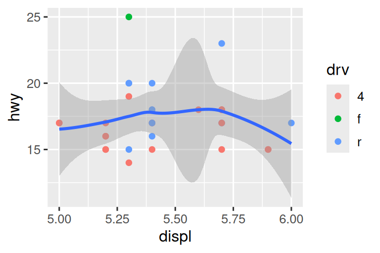
Let’s compare these to the two plots below where the plot on the left sets the limits on individual scales and the plot on the right sets them in coord_cartesian(). We can see that reducing the limits is equivalent to subsetting the data. Therefore, to zoom in on a region of the plot, it’s generally best to use coord_cartesian().
# Left
ggplot(mpg, aes(x = displ, y = hwy)) +
geom_point(aes(color = drv)) +
geom_smooth() +
scale_x_continuous(limits = c(5, 6)) +
scale_y_continuous(limits = c(10, 25))
# Right
ggplot(mpg, aes(x = displ, y = hwy)) +
geom_point(aes(color = drv)) +
geom_smooth() +
coord_cartesian(xlim = c(5, 6), ylim = c(10, 25))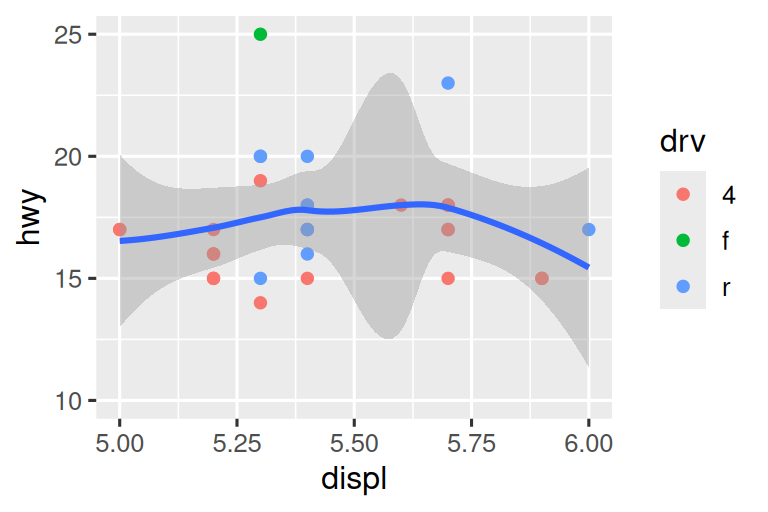
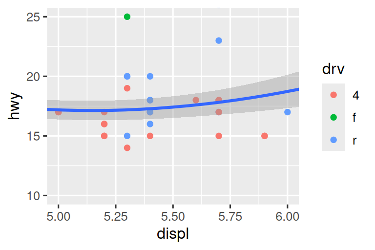
On the other hand, setting the limits on individual scales is generally more useful if you want to expand the limits, e.g., to match scales across different plots. For example, if we extract two classes of cars and plot them separately, it’s difficult to compare the plots because all three scales (the x-axis, the y-axis, and the color aesthetic) have different ranges.
suv <- mpg |> filter(class == "suv")
compact <- mpg |> filter(class == "compact")
# Left
ggplot(suv, aes(x = displ, y = hwy, color = drv)) +
geom_point()
# Right
ggplot(compact, aes(x = displ, y = hwy, color = drv)) +
geom_point()![On the left, a scatterplot of highway mileage vs. displacement of SUVs. On the right, a scatterplot of the same variables for compact cars. Points are colored by drive type for both plots. Among SUVs more of the cars are 4-wheel drive and the others are rear-wheel drive, while among compact cars more of the cars are front-wheel drive and the others are 4-wheel drive. SUV plot shows a clear negative relationship between highway mileage and displacement while in the compact cars plot the relationship is much flatter.](communication_files/figure-html/unnamed-chunk-27-1.png)
![On the left, a scatterplot of highway mileage vs. displacement of SUVs. On the right, a scatterplot of the same variables for compact cars. Points are colored by drive type for both plots. Among SUVs more of the cars are 4-wheel drive and the others are rear-wheel drive, while among compact cars more of the cars are front-wheel drive and the others are 4-wheel drive. SUV plot shows a clear negative relationship between highway mileage and displacement while in the compact cars plot the relationship is much flatter.](communication_files/figure-html/unnamed-chunk-27-2.png)
One way to overcome this problem is to share scales across multiple plots, training the scales with the limits of the full data.
x_scale <- scale_x_continuous(limits = range(mpg$displ))
y_scale <- scale_y_continuous(limits = range(mpg$hwy))
col_scale <- scale_color_discrete(limits = unique(mpg$drv))
# Left
ggplot(suv, aes(x = displ, y = hwy, color = drv)) +
geom_point() +
x_scale +
y_scale +
col_scale
# Right
ggplot(compact, aes(x = displ, y = hwy, color = drv)) +
geom_point() +
x_scale +
y_scale +
col_scale![On the left, a scatterplot of highway mileage vs. displacement of SUVs. On the right, a scatterplot of the same variables for compact cars. Points are colored by drive type for both plots. Both plots are plotted on the same scale for highway mileage, displacement, and drive type, resulting in the legend showing all three types (front, rear, and 4-wheel drive) for both plots even though there are no front-wheel drive SUVs and no rear-wheel drive compact cars. Since the x and y scales are the same, and go well beyond minimum or maximum highway mileage and displacement, the points do not take up the entire plotting area.](communication_files/figure-html/unnamed-chunk-28-1.png)
![On the left, a scatterplot of highway mileage vs. displacement of SUVs. On the right, a scatterplot of the same variables for compact cars. Points are colored by drive type for both plots. Both plots are plotted on the same scale for highway mileage, displacement, and drive type, resulting in the legend showing all three types (front, rear, and 4-wheel drive) for both plots even though there are no front-wheel drive SUVs and no rear-wheel drive compact cars. Since the x and y scales are the same, and go well beyond minimum or maximum highway mileage and displacement, the points do not take up the entire plotting area.](communication_files/figure-html/unnamed-chunk-28-2.png)
In this particular case, you could have simply used faceting, but this technique is useful more generally, if for instance, you want to spread plots over multiple pages of a report.
11.4.6 Exercises
-
Why doesn’t the following code override the default scale?
df <- tibble( x = rnorm(10000), y = rnorm(10000) ) ggplot(df, aes(x, y)) + geom_hex() + scale_color_gradient(low = "white", high = "red") + coord_fixed() What is the first argument to every scale? How does it compare to
labs()?-
Change the display of the presidential terms by:
- Combining the two variants that customize colors and x axis breaks.
- Improving the display of the y axis.
- Labelling each term with the name of the president.
- Adding informative plot labels.
- Placing breaks every 4 years (this is trickier than it seems!).
-
First, create the following plot. Then, modify the code using
override.aesto make the legend easier to see.ggplot(diamonds, aes(x = carat, y = price)) + geom_point(aes(color = cut), alpha = 1/20)
11.5 Thèmes
Enfin, vous pouvez personnaliser les éléments non-données de votre graphique avec un thème :
ggplot(mpg, aes(x = displ, y = hwy)) +
geom_point(aes(color = class)) +
geom_smooth(se = FALSE) +
theme_bw()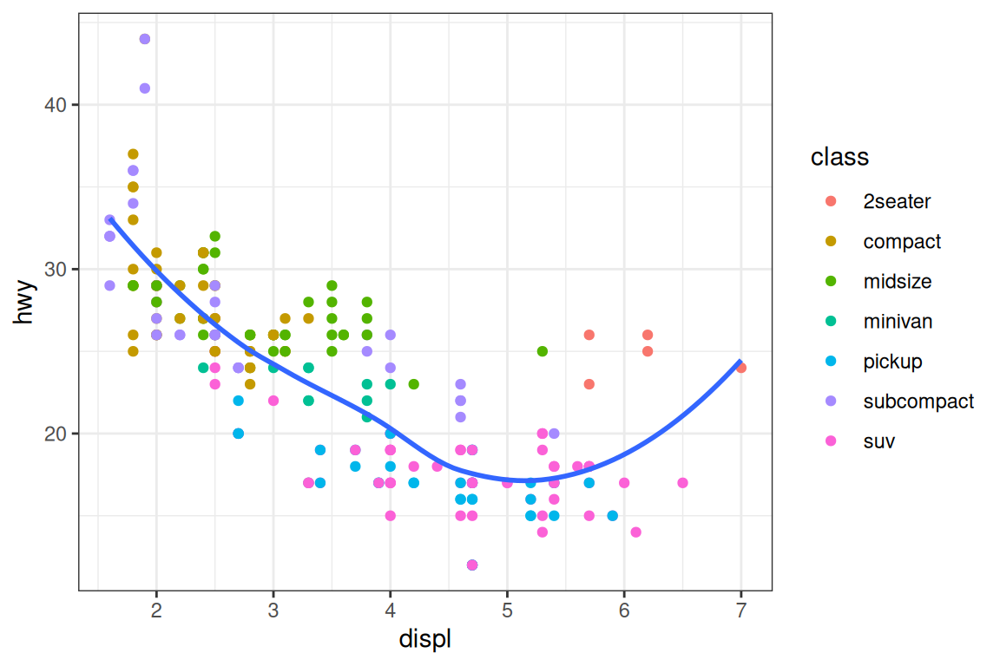
ggplot2 inclut les huit thèmes montrés dans Figure 11.2, avec theme_gray() comme défaut.2 Beaucoup plus sont inclus dans des packages supplémentaires comme ggthemes (https://jrnold.github.io/ggthemes), par Jeffrey Arnold. Vous pouvez aussi créer vos propres thèmes, si vous essayez de correspondre à un style corporatif ou journalistique particulier.

Il est aussi possible de contrôler les composants individuels de chaque thème, comme la taille et la couleur de la police utilisée pour l’axe y. Nous avons déjà vu que legend.position contrôle où la légende est dessinée. Il y a de nombreux autres aspects de la légende qui peuvent être personnalisés avec theme(). Par exemple, dans le graphique ci-dessous, nous changeons la direction de la légende ainsi que mettons une bordure noire autour. Notez que la personnalisation des éléments de la boîte de légende et du titre du graphique du thème se font avec les fonctions element_*(). Ces fonctions spécifient le style des composants non-données, par ex., le texte du titre est en gras dans l’argument face de element_text() et la couleur de la bordure de la légende est définie dans l’argument color de element_rect(). Les éléments de thème qui contrôlent la position du titre et de la note sont respectivement plot.title.position et plot.caption.position. Dans le graphique suivant, ceux-ci sont définis à "plot" pour indiquer que ces éléments sont alignés à l’ensemble de la zone du graphique, au lieu du panneau du graphique (par défaut). Quelques autres composants theme() utiles sont utilisés pour changer le placement du format du texte du titre et de la note.
ggplot(mpg, aes(x = displ, y = hwy, color = drv)) +
geom_point() +
labs(
title = "Larger engine sizes tend to have lower fuel economy",
caption = "Source: https://fueleconomy.gov."
) +
theme(
legend.position = c(0.6, 0.7),
legend.direction = "horizontal",
legend.box.background = element_rect(color = "black"),
plot.title = element_text(face = "bold"),
plot.title.position = "plot",
plot.caption.position = "plot",
plot.caption = element_text(hjust = 0)
)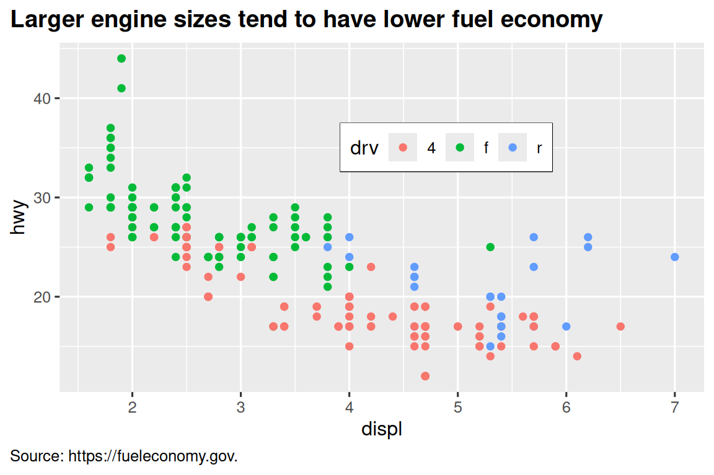
For an overview of all theme() components, see help with ?theme. The ggplot2 book is also a great place to go for the full details on theming.
11.5.1 Exercices
- Choisissez un thème offert par le package ggthemes et appliquez-le au dernier graphique que vous avez créé.
- Rendez les étiquettes des axes de votre graphique bleues et en gras.
11.6 Disposition
Jusqu’à présent, nous avons parlé de la création et de la modification d’un seul graphique. Et si vous aviez plusieurs graphiques que vous voulez disposer d’une certaine manière ? Le package patchwork vous permet de combiner des graphiques séparés dans le même graphique. Nous avons chargé ce package plus tôt dans le chapitre.
Pour placer deux graphiques côte à côte, vous pouvez simplement les ajouter l’un à l’autre. Notez que vous devez d’abord créer les graphiques et les enregistrer en tant qu’objets (dans l’exemple suivant, ils s’appellent p1 et p2). Ensuite, vous les placez côte à côte avec +.
p1 <- ggplot(mpg, aes(x = displ, y = hwy)) +
geom_point() +
labs(title = "Graphique 1")
p2 <- ggplot(mpg, aes(x = drv, y = hwy)) +
geom_boxplot() +
labs(title = "Graphique 2")
p1 + p2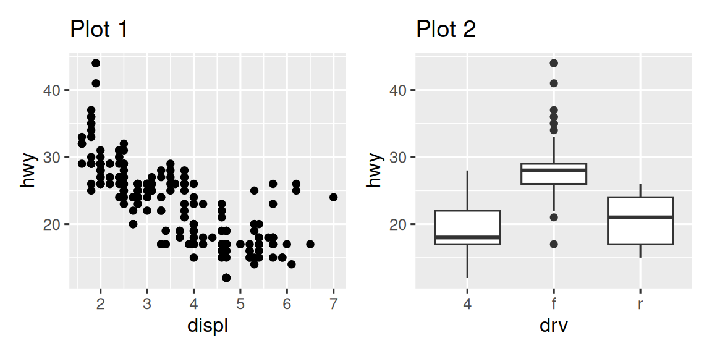
Il est important de noter que dans le bloc de code ci-dessus, nous n’avons pas utilisé une nouvelle fonction du package patchwork. À la place, le package a ajouté une nouvelle fonctionnalité à l’opérateur +.
Vous pouvez aussi créer des dispositions de graphiques complexes avec patchwork. Dans ce qui suit, | place les p1 et p3 côte à côte et / déplace p2 à la ligne suivante.
p3 <- ggplot(mpg, aes(x = cty, y = hwy)) +
geom_point() +
labs(title = "Graphique 3")
(p1 | p3) / p2
De plus, patchwork vous permet de collecter les légendes de plusieurs graphiques dans une légende commune, de personnaliser le placement de la légende ainsi que les dimensions des graphiques, et d’ajouter un titre commun, un sous-titre, une note, etc. à vos graphiques. Ci-dessous, nous créons 5 graphiques. Nous avons désactivé les légendes sur les boîtes à moustaches et le nuage de points et avons collecté les légendes pour les graphiques de densité en haut du graphique avec & theme(legend.position = "top"). Notez l’utilisation de l’opérateur & ici au lieu du + habituel. C’est parce que nous modifions le thème pour le graphique patchwork contrairement aux ggplots individuels. La légende est placée en haut, à l’intérieur du guide_area(). Enfin, nous avons aussi personnalisé les hauteurs des divers composants de notre patchwork – le guide a une hauteur de 1, les boîtes à moustaches 3, les graphiques de densité 2, et le nuage de points facetté 4. Patchwork divise la zone que vous avez allouée pour votre graphique en utilisant cette échelle et place les composants en conséquence.
p1 <- ggplot(mpg, aes(x = drv, y = cty, color = drv)) +
geom_boxplot(show.legend = FALSE) +
labs(title = "Graphique 1")
p2 <- ggplot(mpg, aes(x = drv, y = hwy, color = drv)) +
geom_boxplot(show.legend = FALSE) +
labs(title = "Graphique 2")
p3 <- ggplot(mpg, aes(x = cty, color = drv, fill = drv)) +
geom_density(alpha = 0.5) +
labs(title = "Graphique 3")
p4 <- ggplot(mpg, aes(x = hwy, color = drv, fill = drv)) +
geom_density(alpha = 0.5) +
labs(title = "Graphique 4")
p5 <- ggplot(mpg, aes(x = cty, y = hwy, color = drv)) +
geom_point(show.legend = FALSE) +
facet_wrap(~drv) +
labs(title = "Graphique 5")
(guide_area() / (p1 + p2) / (p3 + p4) / p5) +
plot_annotation(
title = "Kilométrage en ville et sur autoroute pour les voitures avec différentes chaînes de transmission",
caption = "Source : https://fueleconomy.gov."
) +
plot_layout(
guides = "collect",
heights = c(1, 3, 2, 4)
) &
theme(legend.position = "top")![Cinq graphiques disposés de telle sorte que les deux premiers graphiques sont côte à côte. Les graphiques trois et quatre sont sous eux. Et le cinquième graphique s'étend sous eux. Le graphique patchwork est intitulé « Kilométrage en ville et sur autoroute pour les voitures avec différentes chaînes de transmission » et légendé « Source : https://fueleconomy.gov ». Les deux premiers graphiques sont des boîtes à moustaches côte à côte. Les graphiques 3 et 4 sont des graphiques de densité. Et le cinquième graphique est un nuage de points facetté. Chacun de ces graphiques montre des geoms colorées par chaîne de transmission, mais le graphique patchwork n'a qu'une seule légende qui s'applique à tous, au-dessus des graphiques et sous le titre.](communication_files/figure-html/unnamed-chunk-35-1.png)
Si vous aimeriez en savoir plus sur la combinaison et la disposition de plusieurs graphiques avec patchwork, nous vous recommandons de consulter les guides sur le site web du package : https://patchwork.data-imaginist.com.
11.6.1 Exercices
-
Que se passe-t-il si vous omettez les parenthèses dans la disposition du graphique suivant ? Pouvez-vous expliquer pourquoi cela se produit ?
p1 <- ggplot(mpg, aes(x = displ, y = hwy)) + geom_point() + labs(title = "Graphique 1") p2 <- ggplot(mpg, aes(x = drv, y = hwy)) + geom_boxplot() + labs(title = "Graphique 2") p3 <- ggplot(mpg, aes(x = cty, y = hwy)) + geom_point() + labs(title = "Graphique 3") (p1 | p2) / p3 -
En utilisant les trois graphiques de l’exercice précédent, recréez le patchwork suivant.
![Trois graphiques : Le graphique 1 est un nuage de points du kilométrage sur autoroute par rapport à la cylindrée du moteur. Le graphique 2 est des boîtes à moustaches côte à côte du kilométrage sur autoroute par rapport à la chaîne de transmission. Le graphique 3 est des boîtes à moustaches côte à côte du kilométrage en ville par rapport à la chaîne de transmission. Le graphique 1 est sur la première ligne. Les graphiques 2 et 3 sont sur la ligne suivante, chacun s'étirant sur la moitié de la largeur du graphique 1. Le graphique 1 est étiqueté « Fig. A », le graphique 2 est étiqueté « Fig. B » et le graphique 3 est étiqueté « Fig. C ».](communication_files/figure-html/unnamed-chunk-37-1.png)
11.7 Résumé
Dans ce chapitre, vous avez appris à ajouter des étiquettes de graphique telles que le titre, le sous-titre, la note ainsi qu’à modifier les étiquettes des axes par défaut, à utiliser les annotations pour ajouter du texte informatif à votre graphique ou pour mettre en évidence des points de données spécifiques, à personnaliser les échelles des axes et à changer le thème de votre graphique. Vous avez aussi appris à combiner plusieurs graphiques dans un seul graphique en utilisant à la fois des dispositions de graphiques simples et complexes.
Bien que vous ayez jusqu’à présent appris à créer de nombreux types différents de graphiques et à les personnaliser en utilisant une variété de techniques, nous avons à peine égratigner la surface de ce que vous pouvez créer avec ggplot2. Si vous voulez avoir une compréhension complète de ggplot2, nous vous recommandons de lire le livre, ggplot2: Elegant Graphics for Data Analysis. D’autres ressources utiles sont le R Graphics Cookbook par Winston Chang et Fundamentals of Data Visualization par Claus Wilke.
Vous pouvez utiliser un outil comme SimDaltonism pour simuler le daltonisme pour tester ces images.↩︎
Beaucoup de gens se demandent pourquoi le thème par défaut a un arrière-plan gris. C’était un choix délibéré car il met les données en avant tout en rendant les lignes de grille visibles. Les lignes de grille blanches sont visibles (ce qui est important car elles aident considérablement les jugements de position), mais elles ont peu d’impact visuel et nous pouvons facilement les ignorer. L’arrière-plan gris donne au graphique une couleur typographique similaire au texte, assurant que les graphiques s’ajustent au flux d’un document sans jaillir avec un arrière-plan blanc brillant. Enfin, l’arrière-plan gris crée un champ de couleur continu qui assure que le graphique est perçu comme une seule entité visuelle.↩︎